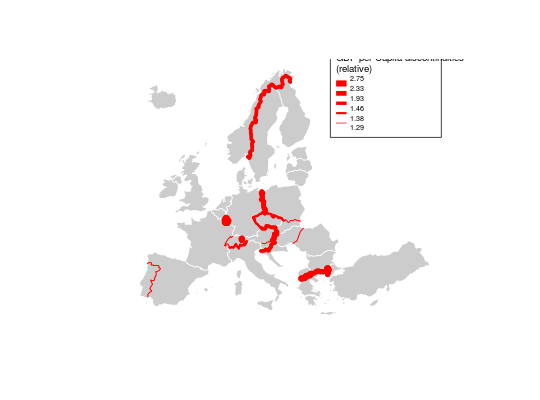

This function computes and plots spatial discontinuities. The discontinuities are plotted over the layer outputed by the getBorders function. The line widths reflect the ratio between values of an indicator in two neighbouring units.
discLayer(spdf, df, spdfid1 = NULL, spdfid2 = NULL, dfid = NULL, var, method = "quantile", nclass = 4, threshold = 0.75, type = "rel", sizemin = 1, sizemax = 10, col = "red", legend.pos = "bottomleft", legend.title.txt = "legend title", legend.title.cex = 0.8, legend.values.cex = 0.6, legend.values.rnd = 2, legend.frame = FALSE, add = TRUE)
An invisible (invisible) SpatialLinesDataFrame with the discontinuity measures is returned.
The "rel" type of discontinuity is the result of pmax(value unit 1 / value unit 2, value unit 2 / value unit 1). The "abs" type of discontinuity is the result of pmax(value unit 1 - value unit 2, value unit 2 - value unit 1).
getBorders, gradLinkLayer, legendGradLines
data(nuts2006) # Get borders nuts0.contig.spdf <- getBorders(nuts0.spdf) # GDP per capita nuts0.df$gdpcap <- nuts0.df$gdppps2008/nuts0.df$pop2008 # Plot countries plot(nuts0.spdf, col="#CCCCCC", lwd=1, border="white")# Plot discontinuities discLayer(spdf = nuts0.contig.spdf, df = nuts0.df, var = "gdpcap", col="red", nclass=5, method="quantile", threshold = 0.5, sizemin = 1, sizemax = 10, type = "rel", legend.frame = TRUE, legend.title.txt = "GDP per Capita discontinuities\n(relative)", legend.pos = "topright", add=TRUE)